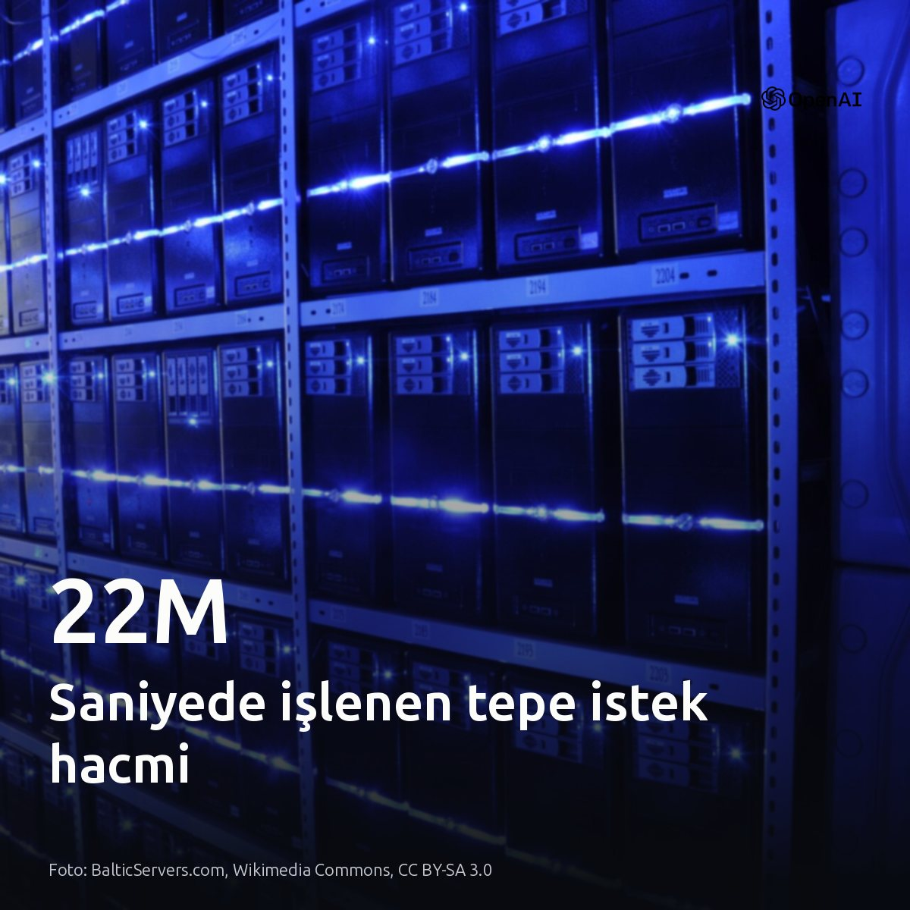
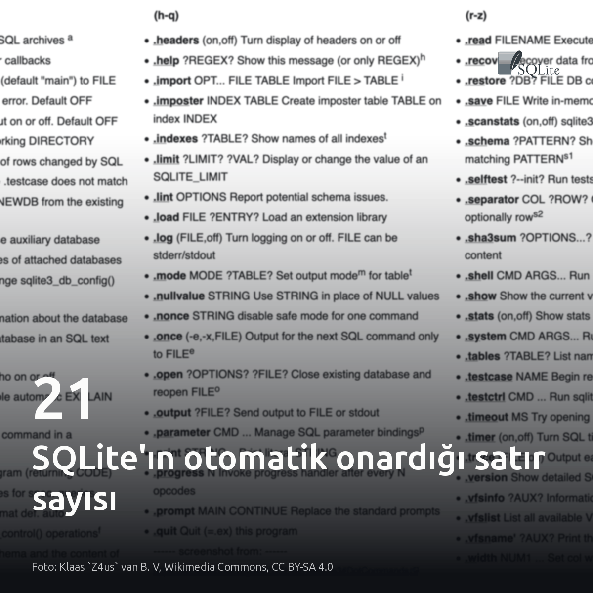
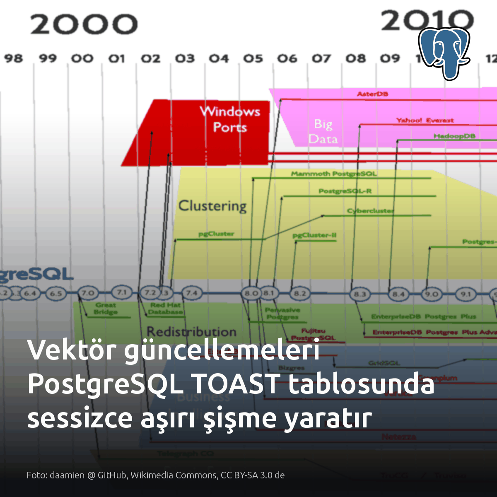
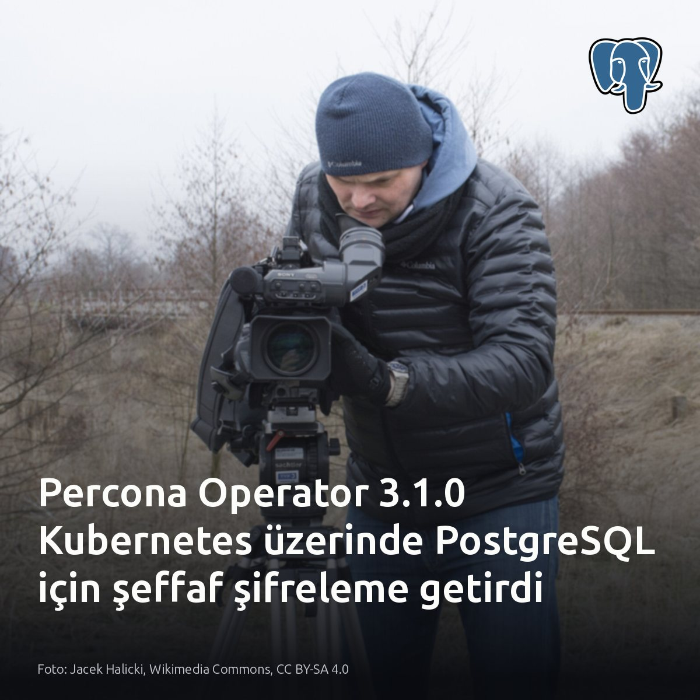

Metni kopyala, kartı indir, LinkedIn'de yapıştır. Bağlantılar gönderiye değil ilk yoruma.

OpenAI, 1 milyar ChatGPT kullanıcısının depolama katmanında saniyede 22 milyon tepe istek yönetiyor. Altyapı tek veritabanıyla başlamıştı. 500 petabaytı aşan bu trafik, sistemi 40 bölgeye yayılan dağıtık bir mimariye zorladı. Bu ölçekte geleneksel veritabanları yerini küresel sistemlere bırakıyor. #datainfrastructure #distributedsystems #databaseKartı indir
Kaynaklar: Kart ve mimari detayları: OpenAI — Rapidly scaling online storage to serve over 1 billion ChatGPT users https://openai.com/index/scaling-storage-one-billion-users-part-one

SQLite 3.53'ün kendi kendini onaran indeksi, 1.000 satırlık testte sadece yazma gören 21 kaydı düzeltti. Okuma sorguları onarımı tetiklemiyor. Yazma almayan diğer 979 satır, sessizce bozuk kalarak sorgularda yanlış sonuç üretmeye devam ediyor. Sorgu sapmalarını önlemek için sistemdeki bayat ifade indekslerinin durumuna bakmak şart. Bu sav, ifade indeksi barındırmayan veya REINDEX EXPRESSIONS çalıştırılan tablolarda geçerli değil. #sqlite #database #indexingKartı indir
Teknik analiz ve test kaynağı: dev.to veritabanı (Alex Georgiev) - https://dev.to/alexgeorgiev17/sqlite-353s-self-healing-index-only-repairs-the-rows-you-write-to-ni

PostgreSQL'de 20.000 satırlık vektör tablosunu güncellemek, TOAST alanında diski sessizce şişiriyor. Gömme vektörleri sayfa sınırını aştığı için satır içi tutulmaz, harici TOAST tablosuna yazılır. Model sürümü yenilenip tüm satırlar güncellendiğinde MVCC eski parçaları silmez. TOAST boyutu anında katlanır. Asıl işletim sorunu autovacuum mantığında ortaya çıkar. Temizleme süreci TOAST alanındaki şişmeye değil, yalnızca ana tablodaki ölü satır oranına bakar. Ana tablodaki satır sayısı değişmediği için belirlenen eşik asla aşılmaz ve autovacuum TOAST bloklarını temizlemeye hiçbir zaman başlamaz. Tablo boyutu sabit görünürken küme sessizce disk krizine sürüklenir. #postgresql #pgvector #databaseKartı indir
Kaynaklar ve detaylı inceleme: Görsel: daamien @ GitHub, Wikimedia Commons, CC BY-SA 3.0 de Analiz yazısı: https://medium.com/google-cloud/embedding-versions-management-toast-and-bloating-in-postgresql-ba6edb33e280?source=rss------postgresql-5

Kubernetes'te disk şifreleme, pod içine sızan saldırgana karşı veritabanını korumaz. Depolama düzeyindeki disk şifrelemesi diski korur; kopyalanmış birimi veya sızan WAL segmentini korumaz. Fiziksel hırsızlığa karşı bu yeterlidir. Fakat pod sızıntılarını ve yetkisiz yöneticileri engellemek için anahtarları harici Vault üzerinde tutulan veritabanı şifrelemesi gerekir. Percona Operator 3.1.0 bu ayrımı Kubernetes üzerinde yerel hale getirdi. Kendi kümenizde şifreleme sınırına bakın: koruma blok aygıtında bitiyorsa pod içindeki veri açıktadır. #postgresql #kubernetes #databaseKartı indir
Kaynaklar ve detaylar: • Percona Operator 3.1.0 ve TDE mimarisi: https://www.percona.com/blog/percona-operator-for-postgresql-3-1-0-transparent-data-encryption-logical-replicas-persistent-logging/ • pg_vault_tde PostgreSQL duyurusu: https://www.postgresql.org/about/news/pg_vault_tde-v171-transparent-data-encryption-for-postgresql-17-and-18-3376/ • Görsel kaynağı: Jacek Halicki, Wikimedia Commons, CC BY-SA 4.0
{kind=link}
{kind=link}
{kind=link}
{kind=link}